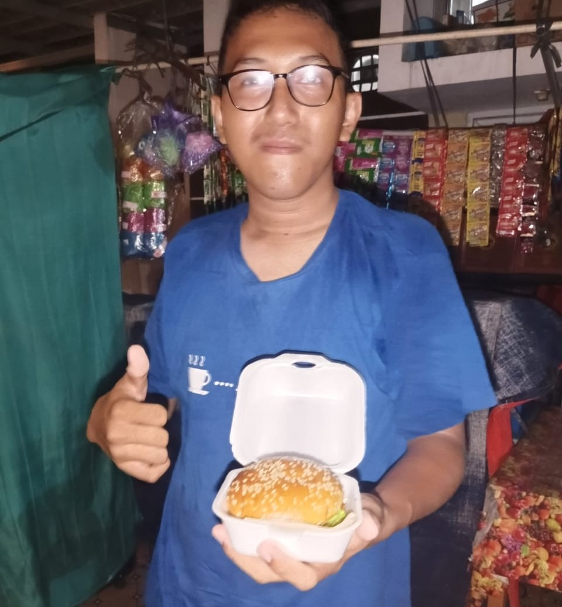
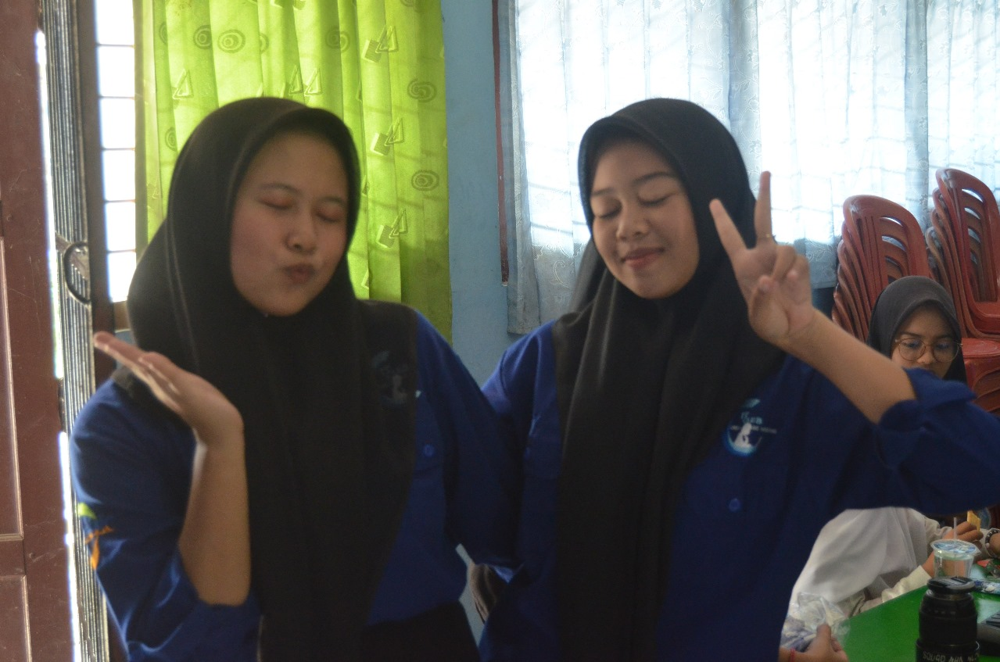
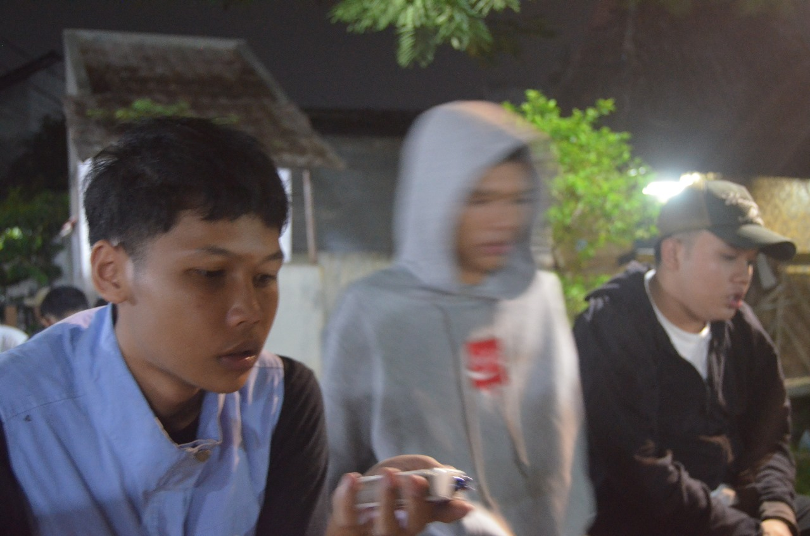

Burger terbaik didunia!
kini hadir burger UMKM bernama Burger Sipil yang saat ini sedang digandrungi gen Z dan dicap sebagai burger terbaik di dunia! Kabarnya Burger Sipil akan membuka cabang di Mars.

Baru! Didirikannya organisasi IT Club
Kini hadir suatu organisasi di bidang Information Technology yaitu IT Club yang berlokasi di Universitas Pacul Nusantara. Jika anda berminat silahkan daftar segera di sana. Akses Web itclubnedukabta.or.id

Laki-laki penyuka pria
kini hadir Manusia jenis baru yang menjadi rebutan banyak pria di dunia. Namanya Javier, ia mengaku sebagai seorang astronot dari planet Nebula yang jatuh ke bumi karena bingung.
Pemuda "Pancasona"
Para pemuda yang memiliki aura yang luar biasa dan mampu memikat para wanita hanya dengan sekali tatap saja. Yang saat ini sedang menjadi bahan pembicaraan para ahli dunia.
